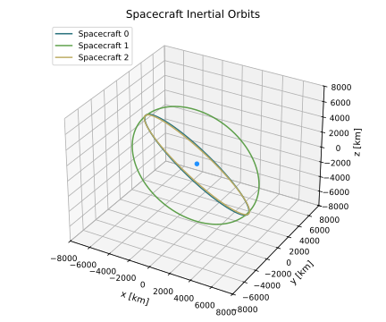

4. scenario_constellationFromTle
4.1. Overview
This script demonstrates how to use the Basilisk v2.1 multi-threading to simulate a constellation of spacecraft initialized from TLE data using multiple threads. The simulation scenario setup is very similar to scenario_BasicOrbitMultiSat_MT, but each spacecraft’s initial orbit elements are read from the selected TLE catalog instead of being generated analytically. The following Vizard screen capture illustrates the family of orbits being simulated.
Inside the run() command the number of threads is specified using:
TheScenario.TotalSim.resetThreads(numThreads)
With this basic setup it is assumed that each BSK process can run independently in a thread. Note that this script does not use any spacecraft flight software which is running in a separate process. The Basilisk v2.1 multi-threading only functions for simulations where each Basilisk process can be evaluated independently.
Warning
The Basilisk v2.1 multi-threading does not have a thread-safe messaging system. This will be added in a later release.
4.2. Illustration of Simulation Results
showPlots = True, tleData = tleHandling.satTle2elem(path/to/tleFile), numThreads = 4

- scenario_constellationFromTle.run(show_plots, tleData, numThreads)[source]
The scenario can be run with the following setup parameters:
- Parameters:
show_plots (bool) – Determines if the script should display plots
tleData (list) – List of TLE-derived orbital element objects for each satellite
numThreads (int) – Number of threads